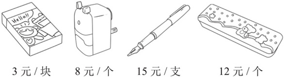
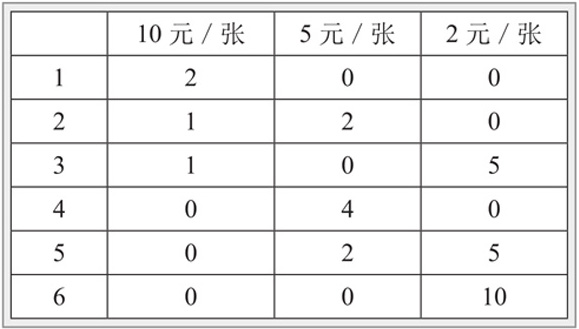
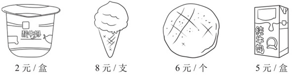
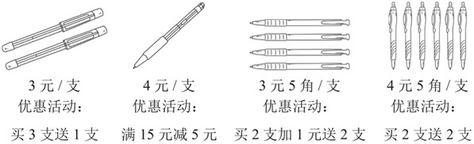
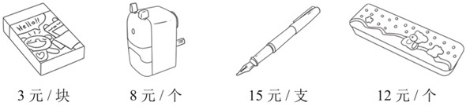
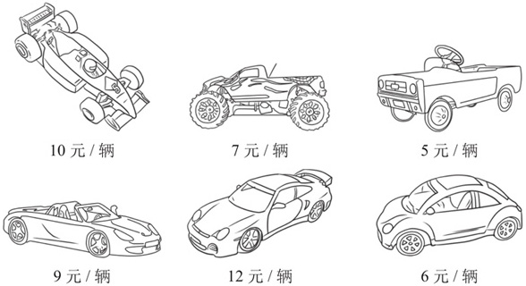
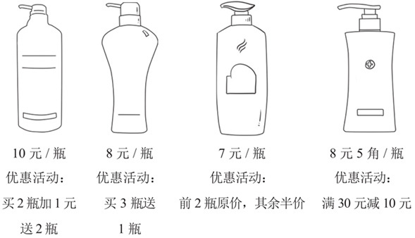

几乎每个孩子都有跟妈妈去超市和商场的经历，对商品的标价、对人民币、对付款都有一定的认知。对5～7岁的孩子，家长可以逐步训练他们去认识商品的价签，认识常用面值的人民币，并学着用不同面值的人民币去付款。在实际购物的过程中，孩子需要使用排列组合的思想选择合适的人民币付款，这既能锻炼孩子的数学思维能力，又能够很好地解决简单的购物问题，增加孩子的实际生活经验。

典型例题 1 把一张20元的纸币换成10元、5元、2元的纸币，有几种换法？
使用表格列出所有的情况。

通过表格可以看出有6种换法。
列表时，一定要有序思考，一一列举，在上面的表格中首先考虑的是都换成10元纸币的情况，然后考虑的是只换1张10元纸币的情况，最后考虑的是不兑换10元纸币的情况。
*注：第五套人民币已经取消5元和2元面额。
典型例题 2 莫妮卡去商场买铅笔，同样的铅笔，一支铅笔5角，一盒铅笔有6支，每盒2元，如果莫妮卡有5元，她想都用来买铅笔，她应该怎么买？最多可以买几支？
一盒铅笔是6支，分支买，一盒铅笔应该是3元，现在一盒铅笔实际卖2元，买盒装铅笔比买单支铅笔划算，所以要尽量用钱买盒装的铅笔。莫妮卡有5元，买2盒铅笔多1元，买3盒铅笔少1元，所以莫妮卡可以买2盒铅笔，用剩下的1元去买2支铅笔，莫妮卡一共可以买6+6+2=14支铅笔。
典型例题 3 马克在商店买了2件东西花了11元，回答下列问题。

（1）马克买了哪几件东西？
（2）马克身上有10元的纸币2张，5元的纸币3张，2元的纸币5张，马克应该怎么付钱，收银员不用找零钱？
（3）如果收银员找给马克4元零钱，你知道马克是怎么付款的吗？
（1）4种商品，只有面包和纯牛奶的总价是11元，所以马克买了面包和纯牛奶。
（2）该题实际上是不同面值纸币的排列组合类题目，还要使用单数和双数的知识。由于11是单数，所以纸币中一定有面额为5元的纸币，而且一定是单数。所以只需要考虑5元纸币为1张以及5元纸币为3张的情况。
当5元纸币为3张时，总价已经超过了11元，所以5元纸币为1张，剩下的是3张2元纸币。
（3）如果收银员找给马克4元零钱，说明马克给了营业员11+4=15元。由于找了4元的零钱，所以付款的纸币中不能有面额小于4元的，马克只可能用10元和5元付款。所以马克可能用了1张10元纸币和1张5元纸币付款，也可能是用了3张5元纸币付款。
典型例题 4 商场促销，有4种圆珠笔在举行促销活动，马克想去买4支同一种类圆珠笔，你觉得他买哪种圆珠笔最划算？

分别列出买4支不同种类圆珠笔的总价，比较总价就知道买哪种圆珠笔划算了。
3元/支的圆珠笔：买4支只需要支付3支的钱，实际需要支付3+3+3=9元。
4元/支的圆珠笔：买4支要支付4+4+4+4=16元＞15元，所以可以减去5元，实际需要支付16-5=11元。
3元5角/支的圆珠笔：买4支实际需要支付2支的钱加1元，所以为3.5+3.5+1=8元。
4元5角/支的圆珠笔：买4支实际需要支付2支的钱，所以实际需要支付4.5+4.5=9元。
因为8元＜9元＜11元，所以买3元5角/支的圆珠笔最划算。
1.把一张10元的纸币，换成5元、2元和1元的纸币，有几种换法？
2.把一张50元的纸币换成零钱，如果换成20元、10元、5元的纸币，有几种换法？
3.老师去商店买小皮球，同样的小皮球一个2元，一盒小皮球有4个，每盒6元，老师一共带了16元，老师应该怎么买小皮球比较划算，最多可以买几个？
4.莫妮卡去商场买文具，她一共买了2件文具花了18元，回答下列问题。

（1）你知道莫妮卡买了哪几件文具吗？
（2）莫妮卡身上有20元的纸币1张，10元的纸币3张，5元的纸币3张，1元的纸币4张，莫妮卡应该怎么付款，收银员不用找零钱？
（3）如果收银员找给莫妮卡2元，你知道莫妮卡是怎么付款的吗？
5.马克用20元买了3辆不同的玩具汽车，你知道是下面的哪3辆吗？

6.商场促销，有4种洗发水在搞促销活动，如果买4瓶同一类型的洗发水，买哪种洗发水最划算？
